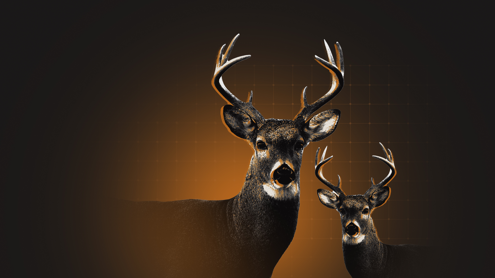
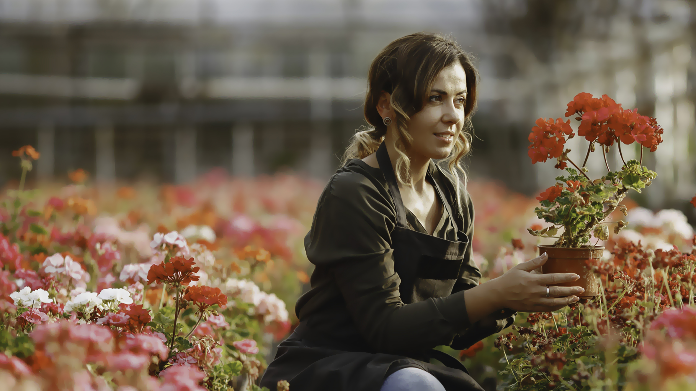
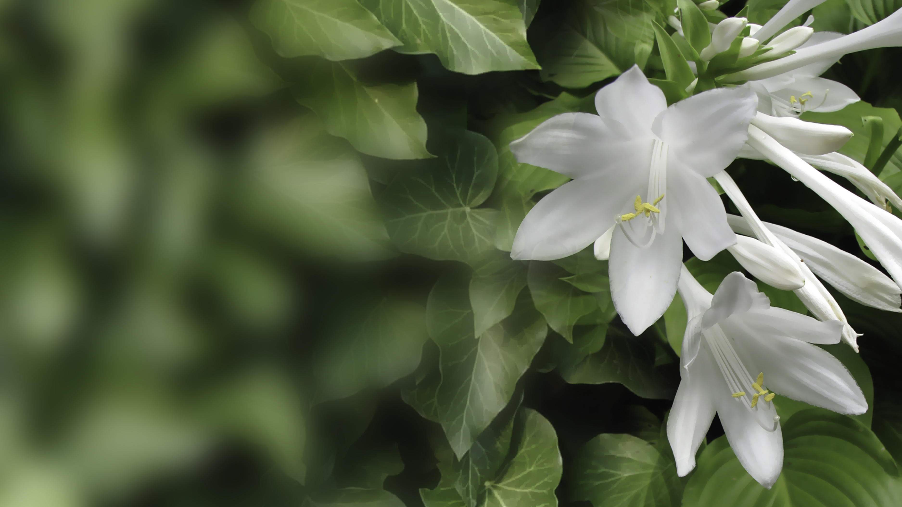

Imagery & photography.
Three subjects, lit naturally, photographed close. Real gardens, real animals, real people. The imagery does the emotional work the copy can't.
Hero specimen
The signature DeerWall image — a buck silhouette against the brand orange. Used sparingly, on the largest surfaces. Print, hero, campaign.

The animal you respect.
The garden you protect.
Three subject pillars
Every brand image falls into one of three buckets. Mix them across a campaign — never lean on one alone.

PILLAR 02
PILLAR 03Crop ratios
Three core ratios cover most needs. Plan for negative space on the side opposite the subject.
 16:9 · WEB · BANNER
16:9 · WEB · BANNERTreatments
Three treatment recipes. Pick by hierarchy: natural for editorial, orange for hero/campaign, mono for moments where the headline needs to win.
Scrims for type
Four scrim recipes that keep type readable on photography without flattening the image.
Gardens worth protecting.
Built for the real ones.
Keep deer out, naturally.
One bottle. Thirty days.
Don't
Four image traps. The aesthetic is honest, slightly warm, never digital-feeling.